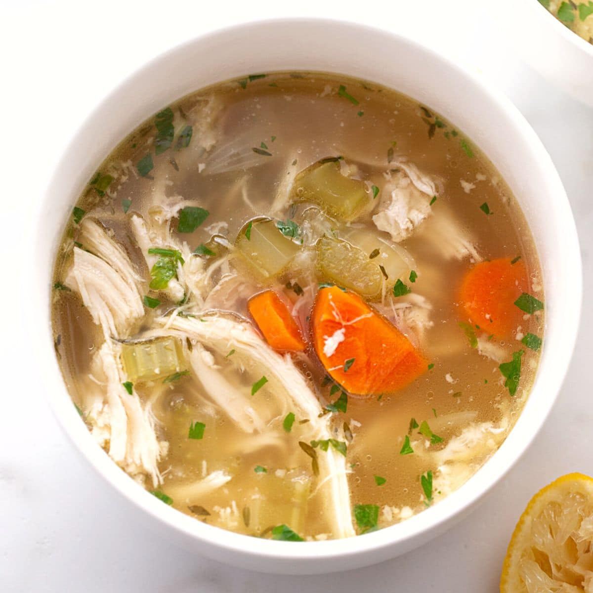

Chicken Soup Recipe

A healthy chicken soup, huge portions and ideal for the holidays.
Ingredients
- 1 tbsp olive oil
- 2 onions (chopped)
- 3 medium carrots (chopped)
- 1 tbsp thyme leaves (roughly chopped)
- 1.4L chicken stock
- 300g leftover roast chicken (shredded and skinned)
- 200g frozen peas
- 3 tbsp Greek yogurt
- 1 garlic clove (crushed)
- Squeeze of lemon juice
Serves 4 people and contains a total of 339kcal per serving.
Steps
- Heat the olive oil in a large pan. Add the onions, carrots and thyme leaves, then gently fry for 15mins.
- Stir in 1.4L chicken stock, bring to a boil, cover, then simmer for 10mins.
- Add the leftover roast chicken, remove half the mixture, then purée with a stick blender. Add frozen peas, seasoning and simmer for 5mins until hot throughout.
- Mix in Greek yogurt, garlic and lemon juice. Ladle the soup into bowls, swirl in the yogurt mixture.
- Serve and enjoy!
Home
About Me